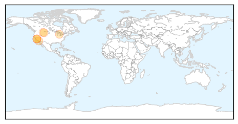
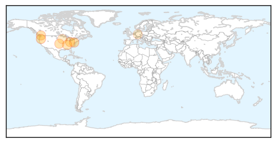

Pertussis
30-Day Web Trend
4 alerts, 0 warnings

30-Day Twitter Trend
0 alerts, 0 warnings

Article Locations
Article Confidences

Top Articles:
- 0.951
- California's worst in 70 years
- 0.947
- HEALTH: Whooping cough epidemic worries officials
- 0.862
- Whooping cough a problem around the state
- 0.825
- 8 cases of pertussis in county - IronMountainDailyNews.com
- 0.788
- California is battling a whooping cough epidemic
- 0.620
- Vaccination best defense against pertussis
Top Tweets:
-
No tweets found for Dec 13, 2014
Influenza
30-Day Web Trend
11 alerts, 0 warnings

30-Day Twitter Trend
2 alerts, 0 warnings

Article Locations
Article Confidences
Top Articles:
- 0.996
- This year’s flu vaccine offers less protection; All flu cases in Oregon so far this year have been H3N2
- 0.995
- Many Americans Still Haven't Gotten a Flu Shot
- 0.943
- There's still time to get the flu vaccine
- 0.938
- Canada: 9th poultry farm affected by H5N2 avian influenza in BC
- 0.907
- There's still time to get the flu vaccine
- 0.862
- Alcoa City Schools plan to reopen Monday after illness
- 0.624
- Owatonna Schools, Steele County Work to Stop Flu Spread
- 0.577
- Bird flu 'protection zone' lifted after 6,000 ducks culled at Cherry Valley Farms in Nafferton
Top Tweets:
-
No tweets found for Dec 13, 2014